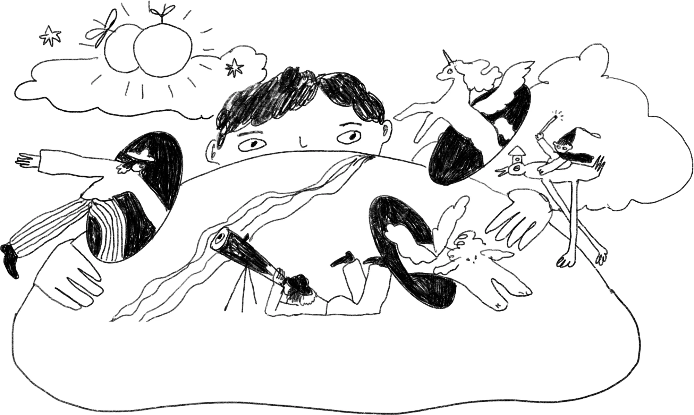
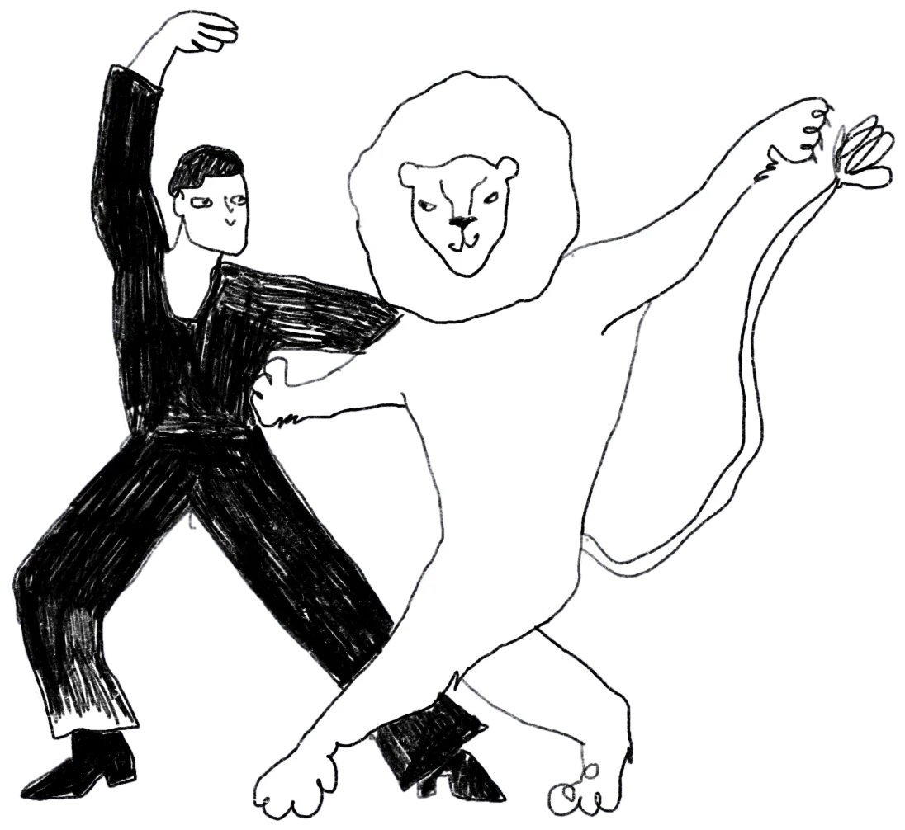
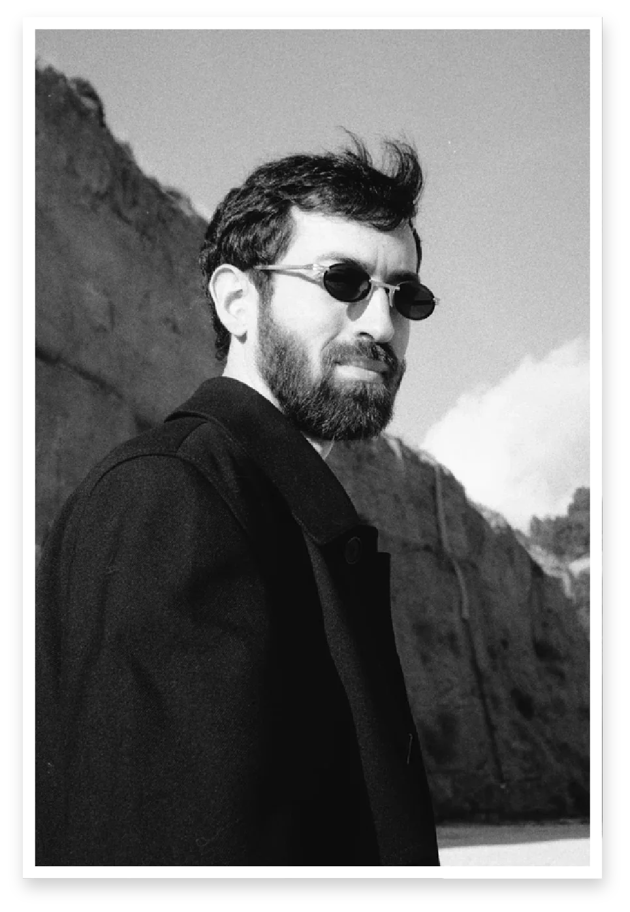

Everyone’s working hard. Nobody’s sure where it’s all going.
I work with founders and product leads, in startups and inside big companies. I help them see the problem for what it is and turn it into a direction the team can act on.
Everything on the roadmap is a priority, which means nothing is.
Every customer call pulls the product somewhere new.
You can explain what you do in twenty minutes. Not in one sentence.
The team pulls in four directions at once.
Your board, the team, and customers each describe a different product.
You were sure about the problem a year ago. Lately, less so.
From the inside, nobody can see the shape of it. You’re just too close.
What changes
You leave with a vision specific enough to act on next Monday. You know what the problem is and where to push.
Effort goes somewhere. You do fewer things, and you can say out loud why these.
The team pulls one way. People line up fast once there’s something real to line up behind.
Customers get it faster. Once you can say the value in one sentence, so can they.
Your team, roadmap and tools all stay. What changes is where they point.

change throughcuriosity
Every change I’ve been part of started with a question that sounded too simple. I ask those questions, then take the time to see the system behind the answers.
Three ways to work together
A week
A second look
For when a big call is coming, or you’ve stared at the problem so long you can’t see it anymore.
In the first hour you tell me everything, messy as it is. I mostly ask questions. Then I take a few days to live with it. In the second hour I come back with what I think the real problem is, where to put your effort, and what to stop doing.
Then you get all of it on one page, short enough to forward to the team.
€1,000 · two one-hour sessions, 2–5 days apart
2–6 months
Shaping the vision
For when the goal is clear and the idea is still blurry: a new product or business line, a pivot, next year’s direction, a value proposition that doesn’t land.
We work it out together. What you offer and to whom. Which way to go, and what to drop. Which experiments will tell you early if you’re wrong. By the end it’s written down as a strategy the team works from.
Scope and goal agreed before we start
Ongoing
Holding the course
For when the direction is set and the hard part is keeping it. Every week brings signals: a customer says something odd, a metric moves, a competitor ships. Some of it matters. Most of it is noise.
We meet once or twice a week, look at what got done and decide which signals count. Small corrections, before they turn into big ones. I’m the one in the room who isn’t in the daily rush, so I can still see the whole thing.
A new payment method for VISA, piloted and now rolled out internationally. Core products at Privatbank, Ukraine’s largest bank, serving 20M+ customers. A new way to order for Kovalska, Ukraine’s largest concrete producer: a foreman on a building site orders concrete the way you’d call a taxi. A beauty-tech platform for Starlit Group, the exclusive distributor of Medik8, from product strategy through design and launch.
Rick has a remote control that lets him teleport to other realities. Rodion is like that remote—showing possible versions of reality that we might never have discovered on our own.
Volodymyr from Kovalska
With Rodion, you get a chance to look beyond the horizon of your usual day-to-day planning. He helped us see our product from a whole new angle and showed us what needs to be done so it stays in demand in the future.
Olexandr from Privatbank
Rodion is the kind of person who helps you see the full picture from every possible perspective—whether it’s the technical system, the client’s perspective, or the business side.
Ivan from VISA
What I love about Rodion is his clear-mindedness. He always has a broad perspective. He brings a ton of fresh ideas that I’ve never heard before, and he’s constantly surprising me with what he contributes.
Margo from COMFY
Ready to dance?
I’m the right partner if:
You lead a product, in a startup or a larger company, and have momentum but no clear picture of where it should go.
You want to understand the problem before you solve it.
You’d rather fall in love with the problem than with your idea.

I’m not for you if:
You need someone to validate a roadmap you’ve already decided on.
You need extra hands. Your team does the building.
You’re afraid to hear that your favorite idea might be wrong.

Meet Rodion
I grew up in a small town where there were more trees than screens. As a kid, I played piano, died early in Counter-Strike, sang in choir, and acted in theater before the adult world convinced me that none of that counted as serious work.
So I spent fifteen years doing the serious kind: shipping products, advising founders, banks, and government offices. Most hard problems I met were buried under opinions, old decisions and too many priorities. Digging them out was the hard part. That’s the part I do now.
Pick a time for the first hour. Or write a few lines about where you are and what’s bugging you, and I’ll reply within two days. If I’m not the right person, I’ll say so.